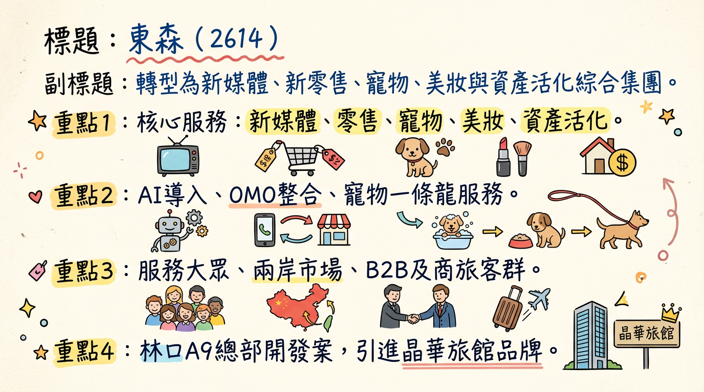
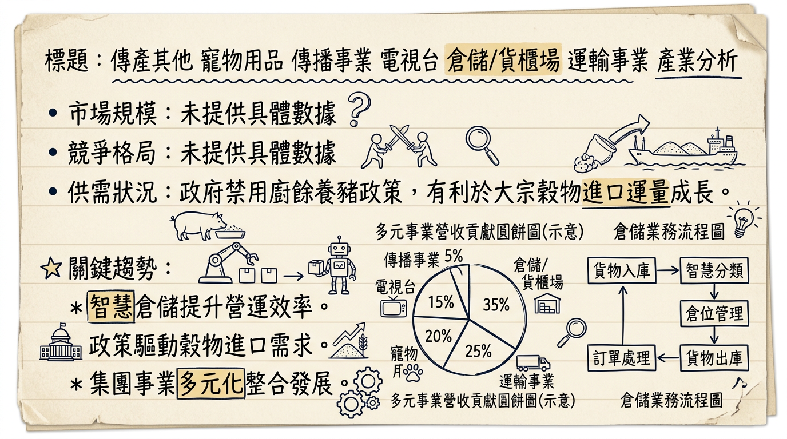
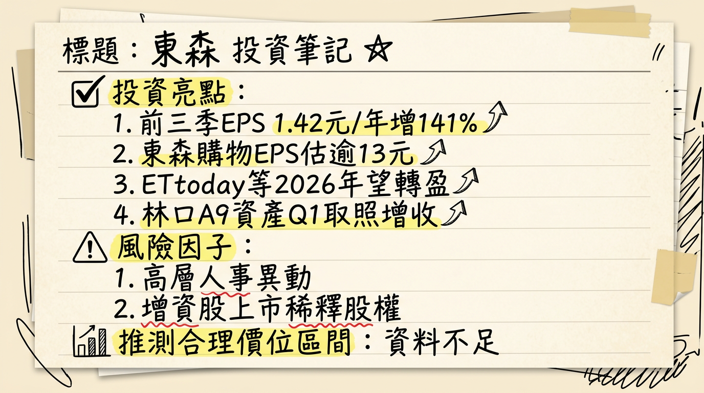

2614 東森 深度研究報告
一句話摘要
東森國際(2614)正從傳統貿易與倉儲業務，成功轉型為涵蓋新零售、新媒體、寵物、美妝及資產活化等多元成長動能的綜合型集團。隨著林口AI智慧國際媒體園區於2026年啟用，以及旗下東森新媒體、東森寵物雲、自然美等轉投資事業預期於2026年全面轉盈，結合全面導入AI技術所帶來的成本效益，公司獲利能力與資產價值有望迎來顯著提升，開啟新的成長週期。
公司概覽
東森國際（2614）已從傳統貿易及倉儲的業務結構轉型，成為一個以新媒體、新零售、寵物、美妝及資產活化為核心的綜合型集團。
公司主要業務與核心產品/服務
- 倉儲事業：提供穩定的倉儲服務，尤其涉及大宗穀物進口運量。
- 新媒體事業：以「ETtoday新聞雲」為平台，提供數位內容、AI廣告投放、短影音與展演轉播。
- 新零售會員服務平台：主要為「東森購物」，加速線上線下整合（OMO），運用AI強化選品、行銷與營運效率。
- 寵物事業：經營「東森寵物雲」，為全台少數可提供美容、醫療、特寵等一條龍服務的寵物連鎖零售體系，並與「慈愛動物醫院」合作。
- 美妝事業：旗下的「自然美生物科技」推動兩岸市場，台灣聚焦異業結盟，上海則以AI科技導入「AI科美」新模式。
- 資產開發與活化：包括林口A9「東林資產」開發案，規劃整合集團營運總部、展演廳、商場及引進晶華旗下品牌「Silks X 晶英薈旅」商務旅館。
各業務獲利貢獻概況
目前最新的公開資料中，未明確提供各業務佔營收的具體百分比。然而，根據2025年法說會和財報資訊顯示，東森國際已轉向以轉投資事業為核心的綜合型獲利模式，各事業體獲利動能如下：
| 事業體 | 2025年營運概況/獲利展望 |
|---|
| 東森購物 | 2025年前10月EPS達10.45元，法人預估全年EPS將超過13元。 |
| 東森新媒體 | 2025年前三季轉虧為盈，預估2026年全年獲利可望破億元。 |
| 東森寵物雲 | 2025年虧損收斂，預計2026年將全面轉盈。 |
| 自然美 | 預估2025年亦將轉虧為盈。 |
| 倉儲事業 | 2025年前三季營運量下降5.1%，營收下降6.7%，但獲利穩定。 |
| 林口媒體園區 | 預計2026年3月取得使照，9月起陸續啟用，將帶來穩定租金收益。 |
核心競爭優勢
多元事業體轉型與協同效應：成功從傳統倉儲轉型，擁抱新零售、新媒體、寵物、美妝等高成長領域，各事業體間透過OMO（線上線下整合）策略，共享會員、數據與資源，強化集團整體競爭力與顧客黏著度。
全面導入AI技術，提升營運效率與創新：集團自2024年全面導入ChatGPT，2025年深化AI應用於選品、行銷投放、新聞產製、美容服務及開店評估等，預估2025-2026年全年可降低營運成本約新台幣5億元，並驅動各事業線的產品與服務創新。
獨特的寵物事業一條龍服務：東森寵物雲結合寵物零售、美容、醫療（與慈愛動物醫院合作）及特寵服務，形成全台少見的完整生態系，搶佔快速成長的寵物市場商機。
資產活化與價值重估：林口AI智慧國際媒體園區的開發，將整合集團總部、商場、展演廳及酒店，不僅為集團提供現代化營運基地，其預期帶來的穩定租金與管理收益，更將顯著提升公司資產價值與現金流。
兩岸美妝市場策略聯動與AI科美創新：自然美透過兩岸市場策略聯動，結合AI科技推出高端儀器專案「AI科美」新模式，瞄準高端美容與個人化服務需求，具備差異化競爭優勢。
財務分析
月營收趨勢
| 月份 | 金額 (新台幣億元) | 月增率 MoM | 年增率 YoY |
|---|
| 2026年01月 | 4.24 | -14.98% | -11.40% |
| 2025年12月 | 4.99 | 7.84% | -4.75% |
| 2025年11月 | 4.63 | -1.93% | -6.15% |
| 2025年10月 | 4.72 | 4.22% | -1.31% |
| 2025年09月 | 4.53 | -4.59% | -1.47% |
| 2025年08月 | 4.75 | 6.03% | 5.68% |
季度數據 (最新完整季度：2025年第三季)
| 項目 | 2025年第三季 |
|---|
| 營收年增率 | -1.20% |
| 毛利率 | 35.29% |
| 營業利益率 | 11.51% |
| 稅後淨利率 | 14.53% |
| 單季EPS | 0.58元 |
年度趨勢
| 項目 | 2024年實際 | 2025年實際/預估 |
|---|
| 全年營收 | 57.4億元 | 54.73億元 |
| 全年EPS | 1.24元 | 2.07元 (法人預估) |
| 備註 | 年減1.59% | 前三季累計EPS為1.42元 |
法說會重點 (2025年12月26日)
- 林口AI智慧國際媒體園區：「恩典大樓」預計2026年3月取得使用執照，集團同仁預計2026年第三季遷入集中辦公。相關展演、住宿、餐飲及休閒設施預計2026年9月陸續啟用。
- 轉投資事業轉盈預期：東森新媒體（ETtoday新聞雲）、東森寵物雲、東森自然美預計2026年都將轉盈，顯著挹注集團獲利。
- 倉儲事業：2025年前三季營運量較去年同期下降5.1%，營收下降6.7%，但獲利仍穩定成長。預計2026年隨政府禁用廚餘養豬政策推動，有利於大宗穀物進口運量成長，獲利可望再創新高峰。
- 東森寵物雲：2025年線下通路已建立116間專業寵物零售通路及18間結合慈愛動物醫院專業醫療合作通路，服務遍及全台18縣市。2026年將優化門市績效、汰弱留強、提升覆蓋率，並透過異業合作開設店中店、導入AI開店評估系統。
- 東森自然美：截至2025年9月營收年增59%，通路據點新增331家達2,027家，年增19.5%。預計2025年轉虧為盈，2026年在中國大陸新開500家店，年底店數目標達2,177家。
- 東森購物：2025年前三季EPS已超過10元，法人預估全年EPS將超過13元。將加速線上線下融合，推動全通路(OMO)零售模式，2025年前三季營業利益率達14%。
- 產能利用率與資本支出：法說會中未具體說明2025-2026年產能利用率及總體資本支出金額。
券商觀點
目前未找到2025-2026年最新券商目標價、EPS預估數字及評等調整的公開資料。
| 券商名稱 | 目標價 (新台幣) | 評等 | 日期 |
|---|
| N/A | N/A | N/A | N/A |
財報深度分析
利潤率趨勢
| 季度 | 毛利率 | 營業利益率 | 稅後淨利率 |
|---|
| 2025年第三季 | 35.29% | 11.51% | 14.53% |
| 2025年第二季 | 35.25% | 10.20% | 11.40% |
| 2025年第一季 | 29.51% | 2.89% | 5.16% |
| 2024年第四季 | 32.30% | 4.27% | 10.59% |
| 2024年第三季 | 32.62% | 6.57% | 3.00% |
| 2024年第二季 | 32.45% | 5.38% | 7.97% |
| 2024年第一季 | 31.67% | 6.48% | -0.60% |
東森國際的利潤率在2025年呈現顯著改善，尤其在第三季達到較高水準，主要受惠於其多元轉投資事業的獲利能力提升：
- 轉投資事業動能齊發：東森新媒體於2025年第三季轉虧為盈，東森寵物雲及自然美虧損收斂並預期2026年轉盈，東森購物保持穩健獲利（2025年前三季營業利益率達14%）。這些事業體的改善直接提升了集團整體利潤率。
- AI導入效益：集團全面導入AI，預估2025-2026年全年可降低營運成本約5億元，有助於營業費用率的控制，進而提升營業利益率。
- 資產處分：2024年處分復興南路資產對其獲利有正面影響，使得2024年全年EPS達1.24元。
- 倉儲事業：儘管2025年前三季營運量和營收小幅下降，但獲利仍穩定，為集團提供基本盤支撐。
存貨與營運
| 季度 | 存貨週轉天數 (日) | 存貨週轉率 (次) | 應收帳款收現天數 (日) | 應收帳款週轉率 (次) |
|---|
| 2025年第三季 | 42.42 | 2.12 | 26.06 | 3.45 |
| 2025年第二季 | 42.40 | 2.12 | 24.14 | 3.46 |
| 2025年第一季 | 41.84 | 2.15 | 29.12 | 2.91 |
| 2024年第四季 | 36.55 | 2.46 | 25.20 | 3.37 |
：從2024年第四季至2025年第三季，存貨週轉天數呈現微幅上升趨勢，存貨週轉率則微幅下降，可能表示存貨去化速度略有放緩，但目前未見異常堆積現象。
應收帳款分析：應收帳款週轉天數在2025年第一季有所上升後，在第二、三季下降，顯示收款效率在2025年中有所改善。
資本支出
| 季度 | 資本支出 (千元) | 折舊攤銷 (千元) |
|---|
| 2025年第三季 | 4,404 | 311,442 |
| 2025年第二季 | 3,076 | 310,034 |
| 2025年第一季 | 3,109 | 309,459 |
| 2024年第四季 | 4,297 | 309,780 |
：近期季度資本支出金額相對穩定且規模較小。然而，林口A9「東林資產」開發案是總投資逾130億元的重大資產投資，預計2026年3月取得使用執照，9月起陸續啟用，雖然非傳統產能擴充，但對未來租金與管理收益有重大影響。
折舊攤銷趨勢：折舊攤銷金額近幾季保持相對穩定，顯示公司資產折舊攤銷政策未有重大改變。
股權異動
- 董監事/大股東申報轉讓紀錄：近期（2024-2026年）未找到東森（2614）董監事/大股東大規模申報轉讓的明確紀錄。總經理周惠英(新任，前發言人)截至2026年1月持股59張，持股比例0.02%。
- 庫藏股買回紀錄：未找到2024-2026年的最新庫藏股買回紀錄。
- 可轉換公司債(CB)：未找到2024-2026年的最新可轉換公司債發行資訊。
- 增資/減資計畫：2025年12月24日公布114年(2025年)增資股股票上市掛牌日期為2026年1月2日，普通股數量為27,021,876股。未找到近期現金增資或減資計畫。
- 股利政策：
*
2024年：每股配發現金股利0.25元、股票股利0.90元，合計1.15元。發放日期為2025年8月13日。
* 歷史股利：2023年、2022年無股利；2021年現金股利1元；2020年現金股利0.8元；2019年現金股利1元。2024年恢復發放股利且股利結構現金與股票並重。
產業分析
市場規模與CAGR
| 產業類別 | 市場規模 (2025/2026) | CAGR (預估) | 趨勢重點 |
|---|
| 倉儲事業 | N/A (未明確數據) | N/A | 政府禁用廚餘養豬政策有利於大宗穀物進口運量成長。 |
| 新媒體 (數位廣告) | 2026年: 1.27兆美元 (全球廣告), 73%為數位廣告 | 15.61% (2025-2034) | AI主導創意、投放、優化；短影音與互動內容興起。 |
| 新零售 (電商) | 2026年: 8.1兆美元 (全球零售電商) | 25.83% (2025-2033) | 會員經濟深化、虛實整合(OMO)、營運效率提升。 |
| 寵物事業 | 2030年: 突破5,000億美元 (全球寵物產業) | 5.77% (2026-2034) | 寵物人性化、高端化；專業照護、醫療服務需求增長。 |
| 美妝事業 | 2025年: 1900-2000億美元 (全球護膚品) | 6.97% (2026-2034) | 大眾盤穩固、高端線高增；AI護膚、個人化美容方案。 |
競爭格局
| 業務類型 | 東森 (2614) | 主要競爭對手 (類型/實例) | 競爭優勢/策略 |
|---|
| 倉儲 | 穩定獲利大宗穀物、智慧倉儲 | N/A (未具體列出) | 穩定基底，政策利多 |
| 新媒體 | ETtoday新聞雲、AI生成內容、多平台轉播 | Google, Meta, TikTok, 傳統新聞媒體 | 數位內容與AI投放，加速內容製作與多元佈局 |
| 新零售 (電商) | 東森購物、OMO線上線下整合、AI選品行銷 | Momo, 蝦皮, PChome, 酷澎 | 會員經濟深化，虛實整合提升用戶體驗與轉換率 |
| 寵物事業 | 東森寵物雲、一條龍服務 (零售+美容+醫療) | Destination Pet, Pet Paradise, CVS Group, (台灣在地連鎖寵物店) | 一站式專業服務，結合醫療資源，異業合作擴展覆蓋率 |
| 美妝事業 | 自然美生物科技、兩岸策略聯動、AI科美 | 歐萊雅, 聯合利華, 寶潔, 雅詩蘭黛 | AI高端美容服務，客製化體驗，深耕中國市場 |
產業趨勢
人工智慧 (AI) 深度整合：AI已成為產業核心基礎設施，主導創意、投放與優化。東森集團全面導入AI於數位媒體（內容生成、廣告投放）、新零售（AI導購、選品、庫存）、美妝（AI科美、個人化方案）及倉儲（智慧穀物倉儲），此為提升效率與競爭力的關鍵。
虛實整合 (OMO, Online-Merge-Offline) 全面化：零售業與服務業競爭從單一線上轉向線上線下整合。東森購物及東森寵物雲積極推動OMO，串聯實體門市、電商平台、社群，打造一致且可轉換的消費體驗，有助於提升客戶黏著度與營運效率。
短影音與內容經濟的崛起：短影音取代靜態貼文成為主要品牌接觸點，社群影音「即購化」趨勢明顯。ETtoday新聞雲需強化短影音製作與多平台整合，以適應消費者決策路徑的改變。
對 東森 而言的具體機會和威脅
機會 (Opportunities)
- AI技術導入：集團全面深化AI應用於各事業體，預期帶來顯著的成本節降（5億元）和營運效率提升，符合產業趨勢。
- OMO策略深化：東森購物及東森寵物雲積極實踐虛實整合，有效應對消費者行為轉變，提升客戶黏著度。
- 寵物經濟成長：台灣寵物市場「人性化」與「高端化」趨勢，有利於東森寵物雲一條龍服務的商業模式擴張。
- 美妝市場高端需求：自然美上海以「AI科美」模式抓住高端與個人化美容服務商機，並持續擴展中國大陸門店。
- 資產活化價值：林口AI智慧國際媒體園區預計2026年啟用，將帶來穩定的租金與管理收益，並提升集團總部營運效率。
- 轉投資事業獲利改善：ETtoday、寵物雲、自然美預期2026年轉盈，將顯著挹注東森國際獲利。
威脅 (Threats)
- 電商市場激烈競爭：台灣電商市場高度集中且跨境電商強勢崛起，東森購物面臨嚴峻挑戰。
- 消費者行為變化：消費者對折扣疲乏、趨向理性消費，對平台業者獲利能力構成壓力。
- 技術快速迭代：AI等新技術發展迅速，若未能持續投資與快速導入，可能在競爭中落後。
- 總經風險：國際關稅政策不確定性、疾病、風災等可能影響倉儲事業的穀物進口運量。
近期催化劑
- 2026年03月05日：外資買超79張，投信買賣超-997張（年初至今），自營商賣超8張。
- 2026年03月04日：公告其及子公司背書保證金額達「公開發行公司資金貸與及背書保證處理準則」第二十五條之規定，被背書保證公司為東森新媒體控股股份有限公司。
- 2026年03月03日：董事會決議聘任周惠英出任總經理，廖尚文董事長卸下兼任總經理職務。
- 2026年02月09日/10日：公布2026年1月合併營收為新台幣4.24億元，較上月減少14.98%，較去年同期減少11.4%，為2025年4月以來新低。
- 2026年01月27日：東森集團積極推動AI轉型，預估2025年至2026年全年將因AI導入降低營運成本約新台幣5億元。
- 2026年01月02日：東森國際114年(2025年)增資股股票上市掛牌。
- 2025年12月26日：法說會公布林口AI智慧國際媒體園區2026年3月取得使照，9月起陸續啟用；旗下東森新聞雲、東森寵物雲與東森自然美預計2026年都將轉盈。
- 2025年12月12日：林口A9東林資產開發案預計2026年第一季取得使用執照，最快第三季營運。
- 2025年12月11日：2025年前三季稅後純益達新台幣4.64億元，年增139%，每股稅後純益為1.42元，已超越2024年全年獲利。
⭐ 成長動能時間軸
| 成長動能項目 | 具體內容 | 預計時間點 |
|---|
| 擴廠 (資產活化) | 林口AI智慧國際媒體園區：「恩典大樓」取得使用執照 | 2026年3月 |
| 擴廠 (資產活化) | 林口AI智慧國際媒體園區：集團同仁遷入集中辦公 | 2026年第三季 |
| 擴廠 (資產活化) | 林口AI智慧國際媒體園區：展演、住宿、餐飲、休閒設施啟用 | 2026年9月起陸續 |
| 轉投資事業轉盈 | 東森新媒體、東森寵物雲、自然美預計全年轉虧為盈 | 2026年全年 |
| 新市場/產能擴充 | 東森自然美：在中國大陸新開500家店，年底店數達2,177家 | 2026年全年 |
| 新客戶/新市場 | 東森寵物雲：優化門市績效、異業合作開拓店中店、強化第三方外送平台 | 2026年全年 |
| AI導入效益 | 集團全面導入AI，全年可降低營運成本約新台幣5億元 | 2025年至2026年全年 |
| 需求面利多 | 倉儲事業：政府禁用廚餘養豬政策，有利於大宗穀物進口運量成長 | 2026年全年 |
| IPO計畫 | 東森寵物雲：積極規劃三年內掛牌上市 | 2025年5月宣佈，預計三年內 |
2026 展望
成長動能
東森國際2026年的主要成長動能來自多個面向：
林口AI智慧國際媒體園區啟用：預計2026年3月取得使照、9月陸續啟用，將整合集團總部、商場、展演廳與酒店，帶來穩定租金與管理收益，大幅提升資產價值和長期現金流。
三大轉投資事業全面轉盈：東森新媒體、東森寵物雲、自然美預計在2026年全面轉虧為盈，將顯著挹注東森國際的本業獲利，而非過去的虧損拖累。其中ETtoday新聞雲更預估獲利破億元。
AI導入效益顯現：集團全面導入AI預計在2025-2026年全年節省5億元成本，有效提升各事業體的獲利能力。
寵物事業持續擴張：東森寵物雲將繼續優化門市績效、擴大覆蓋率，並深化寵物醫療等一站式服務，抓住「寵物人性化」的市場趨勢。
自然美中國市場成長：自然美在中國大陸預計新開500家店，擴大市場滲透率並推廣AI科美新模式，推升營收與獲利。
倉儲事業穩定成長：受益於政府禁用廚餘養豬政策，大宗穀物進口運量有望成長，維持倉儲本業的穩定獲利。
風險
儘管成長動能強勁，仍需關注以下風險：
電商市場競爭加劇：台灣電商市場Momo、蝦皮等強勢平台競爭激烈，跨境電商如酷澎也持續投入，對東森購物的市場份額和獲利能力構成壓力。
景氣循環影響消費力：若全球或台灣經濟成長放緩，可能影響消費者在零售、媒體及美容服務上的支出意願。
新事業體獲利不及預期：儘管預期轉盈，但新媒體、寵物雲、自然美等事業若因市場變化或營運挑戰，未能達到預期獲利目標，將影響集團整體表現。
林口媒體園區招商與營運進度：園區啟用後的招商情況及營運效率，將直接影響其收益貢獻。
國際貿易政策變化：倉儲事業受國際穀物貿易政策影響，存在一定的波動性。
投資結論
東森國際(2614)正處於一個關鍵的轉型與收穫期，其多元化的戰略佈局與數位轉型成果，預期將在2026年開始顯現。
多角化經營帶來穩健成長：東森成功從單一倉儲業務轉型為涵蓋新媒體、新零售、寵物、美妝及資產活化等多元事業的集團。各事業體在2026年有望陸續轉虧為盈，將為集團獲利帶來顯著的增長動能。
資產活化價值重估：林口AI智慧國際媒體園區的啟用，不僅將改善集團營運效率，更將帶來穩定的租金收益與潛在資產重估價值，為公司提供長期現金流與基本面支撐。
AI導入提升營運效率與競爭力：集團全面導入AI技術，預計2025-2026年全年將節省5億元營運成本，並在各事業線推動創新，是未來提升獲利能力的重要驅動力。
寵物經濟與美妝市場的藍海商機：東森寵物雲的一條龍服務和自然美的AI科美模式，精準抓住台灣及兩岸市場的寵物與美容高端化趨勢，具備高成長潛力。
投資建議：考慮到東森國際在2025年法人預估EPS為2.07元，且2026年將有顯著的轉投資事業轉盈與資產活化收益，我們預期其未來獲利能力將有顯著提升。若給予一家具備多元成長動能與資產重估潛力的複合型企業20倍至25倍的預期本益比區間，則目標價區間建議落在 新台幣 42 元至 52 元。此目標價區間反映了公司核心事業的轉型成功、新成長動能的爆發，以及其資產價值的重新評估。
本報告由 AI 自動產生，資料來源為公開網路資訊，僅供參考，不構成投資建議。產生時間：2026-03-06 14:13
📊 資訊卡


